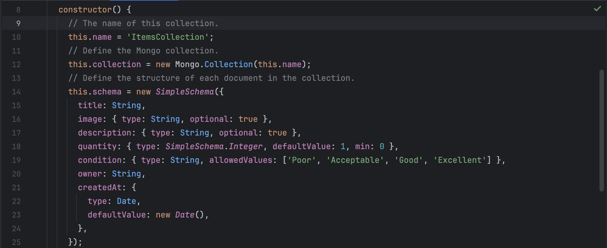
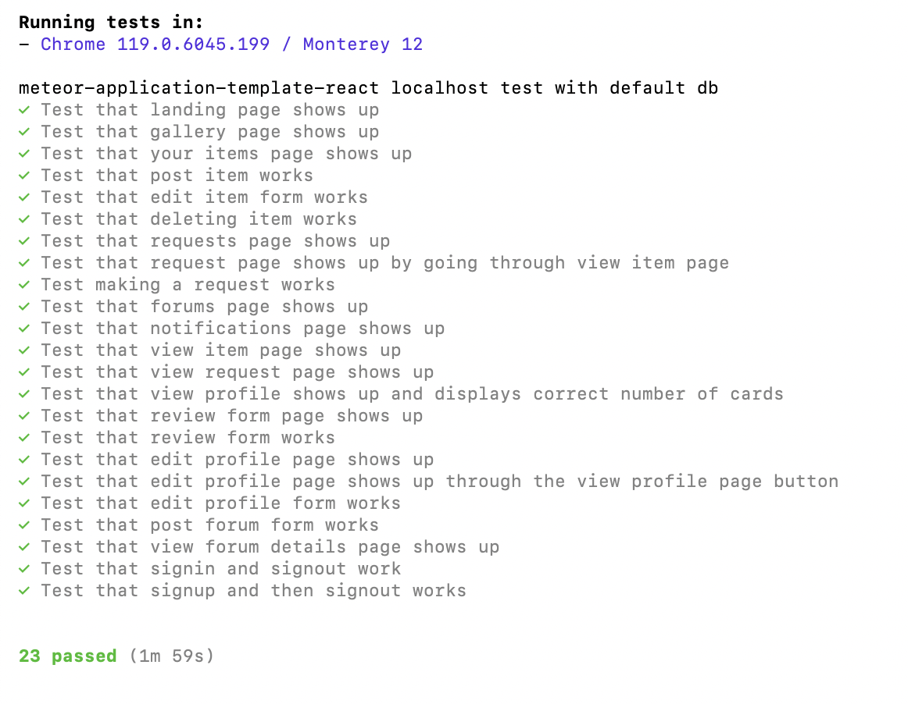

Lendor Vendors, a loaning service
Lendor Vendors

This web application was developed and maintained by the Lendor Vendors team. It is geared towards helping people find items they’re in need of, without involving money. In our opinion, it helps the UH community build more trust, and promotes interactions among one another. Anyone can create an account and start looking for items other people have posted, or even post items themselves for others to request. Don’t see an item you want on the site? Users can also create forum posts where they can request to have an item posted. As soon as your requests have been accepted, you can contact the other individual on where to meet up to get the items. It is a fast and easy system when combined with our built in notifications system, where users get notified when their items have been requested, or when their requests have been fulfilled or denied. Users can also help distinguish good lenders and borrowers from bad one, by using our built in rating system. This rating system keeps users accountable within and UH community, and also helps build trust.
My Contributions
Items

During the development of the project, our group didn’t have a very strict system in place, so everyone just picked issues they wanted to do, and it worked out for us. As for me, I implemented the Items collection that we had set up in MongoDB, which keeps track of all the items that users have posted and their individual data fields. This collection was then subscribed to and used in the Gallery and Your Item pages, which was implemented by me and Marcus Prudencio using cards to display the individual items. I also implemented editing and removing items, as well as displaying the right buttons depending on which user was viewing the item. For example, when you click onto the item card, if you’re the owner of that item, you’ll see the edit and delete item buttons, but if you are not the owner, then you’ll see the request to borrow button. This was done by checking the owner field of the item to see if it was the user currently logged in.
Navigation and Quality of Life

After I implemented those pages and data, the group realized that we needed to implement extra navigation features other than the navbar, as we had many pages within the site that’s only access by clicking other elements on the main pages available on the navbar, such as clicking on the cards displaying each item will bring you to a page that displayed more details about the item. So I implemented a back button on those pages not accessible from the navbar, or were behind multiple button clicks from other pages, such as the requesting page, where you have to click through two pages in order to navigate to. This was done using the build in useNavigate hook from react route DOM, which kept track of the last page you’ve been to. All I had to do was assign a button with a onClick attribute that called history(-1), which would bring you back to your last visited page.
Another feature that we wanted to implement was Pagination, as we predict that after inserting all the default data, it would be very messy and unappealing for our users, if they had to scroll tens of pages down in order to see all the items, and even reviews. Pagination allows us to choose a limit on how many things we display per page, and users can then navigate to the next sets of page when they want to. This was done by using the MUI-materials API, which had built in styling and functionality, all I had to do was supply the total number of pages, the item limit per page, and what happens when users click to the next page. These things were not that hard to get, but the gallery and your items page had to be implemented differently, as they display different sets of items. So we made a component that displays the correct sets of items depending on what gets passed in, and we used that set of data to filter through the items, making sure only ten were displayed per page, using the .slice method and slicing at the startIndex and endIndex. I then implemented this feature in any pages that might display a lot of data, such as the Gallery, Your Items, View Profile, and Notifications pages. I also added a sort by feature for users to sort the items in gallery and your items page by ascending or descending order of when they were posted.
TestCafe

One last thing that I had worked on was doing the testcafe cases for all the pages and forms we had. It was a total of 23 test cases, each testing that individual pages were loaded in correctly, and each form was able to be submitted with valid inputs.
Results
Overall, I learned a lot from this project, not only in terms of being a software engineering, but also how to manage not only yourself, but also other people in a team, as I took on the role of making sure everyone was on the same page, and working through their issues in a timely manner. I learned so much more about Meteor and React, as well as using other libraries and APIs. Also, by talking with my team, I was able to learn about the struggles and techniques they used to implement their own pages and issues, such as defining Meteor methods for both the server side and the client side, as well as being able to subscribe to as many collections as we want when displaying information. It was a very fun and engaging experience, and I believe that everyone in the team had worked hard, and personally, I am very satisfied with how the project turned out in the end.
If you want to learn more about the project, or try it out, here’s the links to our GitHub organization, as well as the deployed link to the actual web application. If you do try out the site, please be sure to leave feedback through the button located in the footer, as we might come back to the project and improve it in the future.